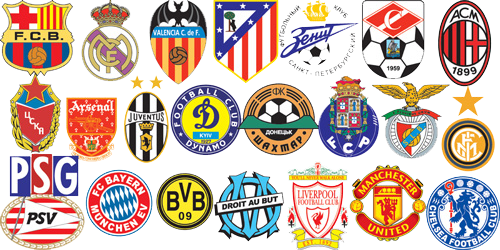

Los Ganadores Mas Importantes

REAL MADRID Copa de Europa/UEFA Champions League : 13 (1955/56, 1956/57, 1957/58, 1958/59, 1959/60, 1965/66, 1997/98, 1999/00, 2001/02, 2013/14, 2015/16, 2016/17, 2017/18)
MILAN Copa de Europa/UEFA Champions League : 7 (1962/63, 1968/69, 1988/89, 1989/90, 1993/94, 2002/03, 2006/07)
BARCELONA Copa de Europa/UEFA Champions League : 5 (1991/92, 2005/06, 2008/09, 2010/11, 2014/15)
LIVERPOOL Copa de Europa/UEFA Champions League : 6 (1976/77, 1977/78, 1980/81, 1983/84, 2004/05, 2018/19)
AJAX Copa de Europa/UEFA Champions League : 4 (1970/71, 1971/72, 1972/73, 1994/95)
BAYERN Copa de Europa/UEFA Champions League : 5 (1973/74, 1974/75, 1975/76, 2000/01, 2012/13)
JUVENTUS Copa de Europa/UEFA Champions League : 2 (1984/85, 1995/96)
INTER Copa de Europa/UEFA Champions League : 3 (1963/64, 1964/65, 2009/10)
MANCHESTER UNITED Copa de Europa/UEFA Champions League : 3 (1967/68, 1998/99, 2007/08)
CHELSEA Copa de Europa/UEFA Champions League : 1 (2011/12)
